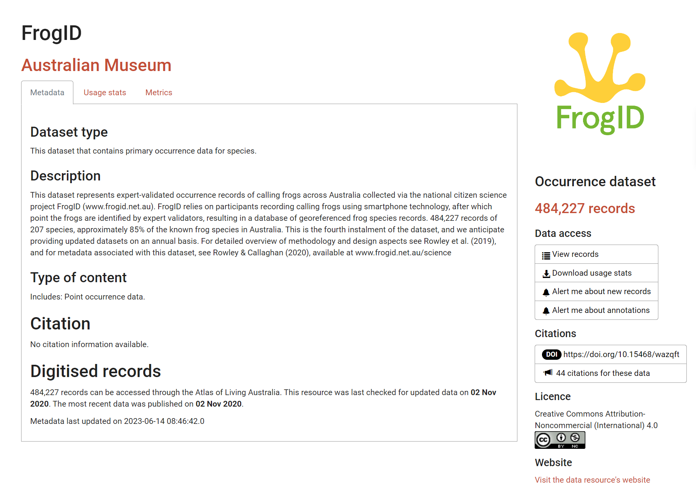

# packages
library(galah)
library(ggplot2)
galah_config(email = "your-email-here") # ALA-registered email
birds <- galah_call() |>
filter(doi == "https://doi.org/10.26197/ala.55960665-74c2-4d1f-81ad-ba4cdd2269fa") |>
atlas_occurrences()1 Inspect
Before diving into cleaning, it’s a good idea to familiarise yourself with the data. In this chapter we will cover ways to initially inspect the data and metadata of a dataset.
1.0.1 Prerequisites
In this chapter we will use Kingfisher (Alcedinidae) occurrence records in 2023 from the ALA.

1.1 Getting to know your data
Metadata is a description of data, where information about different aspects of the data is documented. Some examples include definitions of the variables being measured, how and why the data were collected, and any data standards used. Reviewing the metadata associated with a dataset can be very helpful for understanding the types of data you are working with and any considerations that may need to be accounted for in your analyses.
Many datasets include descriptions of the data’s taxonomic, spatial, and temporal parameters. An example of well formatted metadata is of FrogID from the Australian Museum.

From reading FrogID’s metadata (Rowley and Callaghan 2020), we understand that:
- The dataset comprises acoustic data1
- This is citizen science data2
- Audio is recorded via a smartphone app3
- These data record presences, but not absences
- The data are under a Creative Commons license which is relevant for reuse and republishing
Data standards
Many data infrastructures like the Atlas of Living Australia also follow and encourage a data standard to help consolidate data from many different data providers4.
The data standard used by the Atlas of Living Australia is called Darwin Core. Darwin Core works by defining a) a set of standard terms5 to use across datasets as column names, and b) values eligible to be recorded underneath these terms. Darwin Core standards require that additional files detailing metadata and data structure are supplied along with the dataset. This helps make sure the data is ingested correctly into the data infrastructure.
Knowing whether your dataset follows a standard can allow you to look up term definitions to help you familiarise yourself with the data.
1.2 A first glimpse
When starting with a new dataset, we want to get an initial idea:
- How many rows and columns are there?
- What are the column names?
- What types of data are in each column?
- What are their possible values or ranges?
These answers are useful to know before jumping into wrangling and cleaning data.
There are several ways to return an overview of your data, ranging in how comprehensively you wish to summarise your data’s structure.
Return a condensed summary of your data’s structure using glimpse() from dplyr.
library(dplyr)
glimpse(birds)Rows: 140,670
Columns: 13
$ recordID <chr> "00000eb7-95a6-40ad-acc5-9b58ed2ab95b", "0000c741-b70…
$ scientificName <chr> "Dacelo (Dacelo) novaeguineae", "Dacelo (Dacelo) nova…
$ taxonConceptID <chr> "https://biodiversity.org.au/afd/taxa/1fc76c4d-4830-4…
$ decimalLatitude <dbl> -37.77953, -37.70718, -42.96048, -36.89798, -32.90858…
$ decimalLongitude <dbl> 145.0460, 143.5939, 147.2209, 147.0573, 151.6859, 150…
$ eventDate <dttm> 2022-04-19 11:30:00, 2022-12-25 07:37:00, 2022-10-27…
$ occurrenceStatus <chr> "PRESENT", "PRESENT", "PRESENT", "PRESENT", "PRESENT"…
$ dataResourceName <chr> "eBird Australia", "eBird Australia", "eBird Australi…
$ family <chr> "Alcedinidae", "Alcedinidae", "Alcedinidae", "Alcedin…
$ genus <chr> "Dacelo", "Dacelo", "Dacelo", "Dacelo", "Dacelo", "To…
$ species <chr> "Dacelo novaeguineae", "Dacelo novaeguineae", "Dacelo…
$ cl22 <chr> "Victoria", "Victoria", "Tasmania", "Victoria", "New …
$ year <dbl> 2022, 2022, 2022, 2022, 2022, 2022, 2022, 2022, 2022,…Return tables of descriptive statistics for each variable, grouped by data type (e.g., numeric, character, date) using skim() from skimr.
library(skimr)
skim(birds)| Name | birds |
| Number of rows | 140670 |
| Number of columns | 13 |
| _______________________ | |
| Column type frequency: | |
| character | 9 |
| numeric | 3 |
| POSIXct | 1 |
| ________________________ | |
| Group variables | None |
Variable type: character
| skim_variable | n_missing | complete_rate | min | max | empty | n_unique | whitespace |
|---|---|---|---|---|---|---|---|
| recordID | 0 | 1.00 | 36 | 36 | 0 | 140670 | 0 |
| scientificName | 0 | 1.00 | 6 | 42 | 0 | 22 | 0 |
| taxonConceptID | 0 | 1.00 | 73 | 73 | 0 | 22 | 0 |
| occurrenceStatus | 0 | 1.00 | 7 | 7 | 0 | 1 | 0 |
| dataResourceName | 0 | 1.00 | 8 | 58 | 0 | 17 | 0 |
| family | 0 | 1.00 | 11 | 11 | 0 | 1 | 0 |
| genus | 116 | 1.00 | 4 | 11 | 0 | 5 | 0 |
| species | 2859 | 0.98 | 12 | 24 | 0 | 10 | 0 |
| cl22 | 1717 | 0.99 | 8 | 28 | 0 | 8 | 0 |
Variable type: numeric
| skim_variable | n_missing | complete_rate | mean | sd | p0 | p25 | p50 | p75 | p100 | hist |
|---|---|---|---|---|---|---|---|---|---|---|
| decimalLatitude | 0 | 1 | -28.84 | 7.92 | -43.58 | -34.97 | -30.52 | -26.31 | 35.6 | ▇▆▁▁▁ |
| decimalLongitude | 0 | 1 | 146.10 | 8.80 | 96.87 | 145.11 | 148.95 | 152.39 | 174.8 | ▁▁▂▇▁ |
| year | 0 | 1 | 2022.00 | 0.00 | 2022.00 | 2022.00 | 2022.00 | 2022.00 | 2022.0 | ▁▁▇▁▁ |
Variable type: POSIXct
| skim_variable | n_missing | complete_rate | min | max | median | n_unique |
|---|---|---|---|---|---|---|
| eventDate | 4 | 1 | 2021-12-31 18:07:00 | 2022-12-31 22:50:00 | 2022-07-31 07:39:00 | 77113 |
Return a quick summary of your data’s structure using base R str()
str(birds)spc_tbl_ [140,670 × 13] (S3: spec_tbl_df/tbl_df/tbl/data.frame)
$ recordID : chr [1:140670] "00000eb7-95a6-40ad-acc5-9b58ed2ab95b" "0000c741-b706-49dc-864e-bf9be82982a8" "0001057f-c7e9-4ae2-b7db-f0f03b4e52a0" "000121a3-a27e-4656-ad55-e817ebf05341" ...
$ scientificName : chr [1:140670] "Dacelo (Dacelo) novaeguineae" "Dacelo (Dacelo) novaeguineae" "Dacelo (Dacelo) novaeguineae" "Dacelo (Dacelo) novaeguineae" ...
$ taxonConceptID : chr [1:140670] "https://biodiversity.org.au/afd/taxa/1fc76c4d-4830-4129-9b86-1c7e944c3c50" "https://biodiversity.org.au/afd/taxa/1fc76c4d-4830-4129-9b86-1c7e944c3c50" "https://biodiversity.org.au/afd/taxa/1fc76c4d-4830-4129-9b86-1c7e944c3c50" "https://biodiversity.org.au/afd/taxa/1fc76c4d-4830-4129-9b86-1c7e944c3c50" ...
$ decimalLatitude : num [1:140670] -37.8 -37.7 -43 -36.9 -32.9 ...
$ decimalLongitude: num [1:140670] 145 144 147 147 152 ...
$ eventDate : POSIXct[1:140670], format: "2022-04-19 11:30:00" "2022-12-25 07:37:00" ...
$ occurrenceStatus: chr [1:140670] "PRESENT" "PRESENT" "PRESENT" "PRESENT" ...
$ dataResourceName: chr [1:140670] "eBird Australia" "eBird Australia" "eBird Australia" "eBird Australia" ...
$ family : chr [1:140670] "Alcedinidae" "Alcedinidae" "Alcedinidae" "Alcedinidae" ...
$ genus : chr [1:140670] "Dacelo" "Dacelo" "Dacelo" "Dacelo" ...
$ species : chr [1:140670] "Dacelo novaeguineae" "Dacelo novaeguineae" "Dacelo novaeguineae" "Dacelo novaeguineae" ...
$ cl22 : chr [1:140670] "Victoria" "Victoria" "Tasmania" "Victoria" ...
$ year : num [1:140670] 2022 2022 2022 2022 2022 ...
- attr(*, "spec")=
.. cols(
.. recordID = col_character(),
.. scientificName = col_character(),
.. taxonConceptID = col_character(),
.. decimalLatitude = col_double(),
.. decimalLongitude = col_double(),
.. eventDate = col_datetime(format = ""),
.. occurrenceStatus = col_character(),
.. dataResourceName = col_character(),
.. family = col_character(),
.. genus = col_character(),
.. species = col_character(),
.. cl22 = col_character(),
.. year = col_double()
.. )
- attr(*, "problems")=<externalptr>
- attr(*, "doi")= chr "https://doi.org/10.26197/ala.55960665-74c2-4d1f-81ad-ba4cdd2269fa"
At this early stage, it’s helpful to assess whether your dataset meets your expectations. Consider if the data appear as anticipated. Are the values in each column reasonable? Are there any noticeable gaps or errors that might need to be corrected, or that could potentially render the data unusable?
1.3 Next steps
We have just learned some ways to initially inspect our dataset. Keep in mind, we don’t expect everything to be perfect. Some issues are expected and may indicate problems with our query or the data itself. This initial inspection is a good opportunity to identify where these issues might be and assess their severity.
When you are confident that the dataset is largely as expected, you are ready to start summarising your data.
Meaning the majority of individuals recorded are male.↩︎
Suggesting these data could be biased towards populated areas.↩︎
As a result, the authors recommend filtering data to
geographic uncertainty of <3000mif you require high coordinate precision.↩︎Making datasets easier to consolidate is also referred to as interoperability, one of the principles of FAIR data.↩︎
We suggest using
Ctrl/CMD + Fand searching your variable name on the webpage. Don’t hesitate to Google variable names if you are unsure what they represent.↩︎